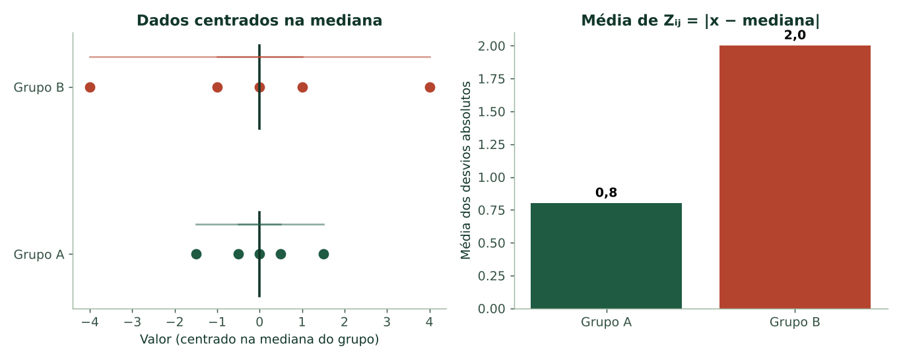
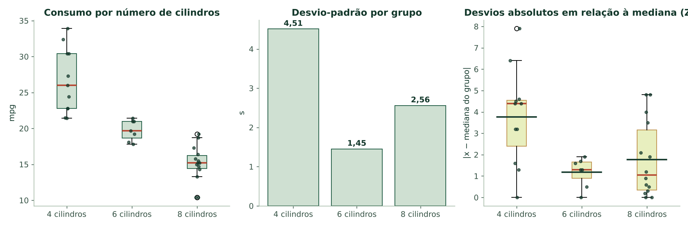

Levene–Brown–Forsythe
Verifica se a variabilidade é semelhante entre grupos, de forma robusta à não normalidade.
Comece por aqui
Muitos métodos (teste t de Student, ANOVA, regressão) supõem que os grupos tenham variabilidade semelhante, a chamada homogeneidade de variâncias ou homocedasticidade. O teste de Levene, na versão de Brown e Forsythe, verifica essa suposição de modo robusto: ele funciona bem mesmo quando os dados se afastam da normalidade.
O que é o teste
A ideia é simples: transformar “dispersão” em “média”. Para cada observação, calcula-se o desvio absoluto em relação ao centro do seu grupo, \(Z_{ij}=|x_{ij}-\text{centro}_i|\). Se os grupos têm a mesma variabilidade, esses desvios têm a mesma média; para compará-las, aplica-se uma ANOVA de um fator sobre os \(Z_{ij}\).

Levene (1960) usa a média do grupo como centro. Brown–Forsythe (1974) usa a mediana, que é mais robusta a assimetria e valores extremos. O car::leveneTest() usa a mediana por padrão.
Pressupostos e como verificá-los
| Pressuposto | Como verificar |
|---|---|
| Observações independentes dentro e entre grupos | Delineamento do estudo; medidas repetidas exigem outros métodos |
| Variável resposta quantitativa | Tipo de variável |
| Grupos definidos por um fator (k ≥ 2) | table(fator) |
| Tamanhos de grupo não muito pequenos | table(fator); com n < 5 por grupo, o poder é baixo |
| Normalidade não é exigida | Mas assimetria muito forte reduz o poder; use a mediana |
Hipóteses e estatística de teste
Em que:
- \(W\)
- estatística de teste (equivale à razão F de uma ANOVA sobre os Z)
- \(k\)
- número de grupos
- \(N\)
- total de observações
- \(n_i\)
- tamanho do grupo i
- \(x_{ij}\)
- j-ésima observação do grupo i
- \(\tilde x_i\)
- centro do grupo i (mediana em Brown–Forsythe; média em Levene)
- \(Z_{ij}\)
- desvio absoluto em relação ao centro do grupo
- \(\bar Z_{i\cdot},\ \bar Z_{\cdot\cdot}\)
- média dos desvios no grupo i e média geral dos desvios
Exemplo numérico, passo a passo (mtcars: mpg por cilindros)
| Cilindros | n | Média | Mediana | DP | Variância |
|---|---|---|---|---|---|
| 4 | 11 | 26,66 | 26,0 | 4,510 | 20,339 |
| 6 | 7 | 19,74 | 19,7 | 1,454 | 2,113 |
| 8 | 14 | 15,10 | 15,2 | 2,560 | 6,554 |
Para cada carro calcula-se \(Z=|\text{mpg}-\text{mediana do grupo}|\). As médias dos desvios são \(\bar Z_4=3,773\), \(\bar Z_6=1,186\) e \(\bar Z_8=1,771\); a média geral é \(\bar Z_{\cdot\cdot}=2,331\).
Numerador: \[\begin{aligned}&11(3{,}773-2{,}331)^2 \\ &\quad +7(1{,}186-2{,}331)^2 \\ &\quad +14(1{,}771-2{,}331)^2 \\ &= 36,430.\end{aligned}\]
Denominador (soma de quadrados dentro): 95,919.
\(W=\dfrac{29}{2}\times\dfrac{36,430}{95,919}=5,5071\) com 2 e 29 graus de liberdade ⇒ \(p=0,00939\).
Propriedades e valor-p
- Sob \(H_0\), \(W\) segue aproximadamente uma distribuição \(F\) com \(k-1\) e \(N-k\) graus de liberdade; o valor-p é \(P(F_{k-1,N-k}\geq W)\).
- Teste unilateral à direita: apenas valores grandes de \(W\) rejeitam \(H_0\).
- Brown e Forsythe (1974) e Conover, Johnson e Johnson (1981) mostram que a versão com mediana mantém bem o nível de significância sob assimetria e caudas pesadas.
- Não há intervalo de confiança usual para \(W\). Para quantificar a diferença de dispersão, use razões de desvios-padrão (por exemplo, \(s_4/s_6\)) com IC por bootstrap.
Como interpretar os resultados
| Resultado | Leitura | Conduta |
|---|---|---|
| p < 0,05 | Há evidência de que as variâncias diferem entre os grupos. | Prefira Welch (teste t ou ANOVA) ou modelos com variância heterogênea. |
| p ≥ 0,05 | Sem evidência suficiente de diferença entre as variâncias. | Não prova igualdade; olhe os boxplots e as razões de DP. |
| Razão de DP > 2 e n desbalanceado | Impacto potencialmente grande sobre testes t e F. | Use procedimentos robustos mesmo que p seja limítrofe. |
Reporte \(W\), os graus de liberdade e o valor-p, indicando o centro utilizado (mediana ou média).
Como executar no R e em Python
Onde executar o código em Python
Não é preciso instalar nada: o Google Colab é um computador na nuvem, gratuito, que executa Python pelo navegador e já traz as bibliotecas usadas aqui (numpy, scipy e matplotlib).
leveneTest() pertence ao pacote car (FOX; WEISBERG, 2019). Instale uma única vez com install.packages("car") e carregue com library(car).
# install.packages("car")
library(car)
leveneTest(mpg ~ factor(cyl), data = mtcars)
Exemplo de aplicação
Contexto dos dados
No mtcars, queremos comparar o consumo médio entre carros de 4, 6 e 8 cilindros por ANOVA. Antes, é preciso saber se a variabilidade do consumo é semelhante nos três grupos.
Código em R
# Levene–Brown–Forsythe: exemplo completo ----
# Pacote: car. Instale uma única vez: install.packages("car")
library(car)
# 1. Dados: consumo (mpg) por número de cilindros
dados <- mtcars
dados$cil <- factor(dados$cyl)
aggregate(mpg ~ cil, data = dados, FUN = function(v) c(n = length(v), media = mean(v), mediana = median(v), dp = sd(v)))
# 2. Diagnóstico gráfico
boxplot(mpg ~ cil, data = dados, col = "gray85", xlab = "Cilindros", ylab = "mpg")
# 3. Brown–Forsythe (centro = mediana, padrão do pacote car)
leveneTest(mpg ~ cil, data = dados)
# 4. Levene clássico (centro = média)
leveneTest(mpg ~ cil, data = dados, center = mean)
# 5. Cálculo manual: ANOVA sobre os desvios absolutos em torno da mediana
dados$Z <- abs(dados$mpg - ave(dados$mpg, dados$cil, FUN = median))
anova(lm(Z ~ cil, data = dados))
# 6. Bartlett para comparação (sensível a não normalidade)
bartlett.test(mpg ~ cil, data = dados)
# 7. Em modelos: homogeneidade dos resíduos entre grupos
modelo <- lm(mpg ~ cil, data = dados)
leveneTest(modelo)
A mesma análise em Python, com os resultados
Cole o código em um notebook do Google Colab ↗ e execute com Shift+Enter. Os valores abaixo são a saída desse código.
# Bibliotecas: numpy, scipy e matplotlib (já instaladas no Google Colab)
import numpy as np
from scipy import stats
import matplotlib.pyplot as plt
mpg = np.array([21, 21, 22.8, 21.4, 18.7, 18.1, 14.3, 24.4, 22.8, 19.2, 17.8, 16.4, 17.3, 15.2, 10.4, 10.4, 14.7, 32.4, 30.4, 33.9, 21.5, 15.5, 15.2, 13.3, 19.2, 27.3, 26, 30.4, 15.8, 19.7, 15, 21.4])
cyl = np.array([6, 6, 4, 6, 8, 6, 8, 4, 4, 6, 6, 8, 8, 8, 8, 8, 8, 4, 4, 4, 4, 8, 8, 8, 8, 4, 4, 4, 8, 6, 8, 4])
disp = np.array([160, 160, 108, 258, 360, 225, 360, 146.7, 140.8, 167.6, 167.6, 275.8, 275.8, 275.8, 472, 460, 440, 78.7, 75.7, 71.1, 120.1, 318, 304, 350, 400, 79, 120.3, 95.1, 351, 145, 301, 121])
# 1. Grupos: consumo por número de cilindros
grupos = {c: mpg[cyl == c] for c in (4, 6, 8)}
print("cil n média mediana DP")
for c, g in grupos.items():
print(f"{c:>3} {len(g):>3} {g.mean():7.3f} {np.median(g):8.3f} {g.std(ddof=1):7.3f}")
# 2. Diagnóstico gráfico
plt.boxplot(list(grupos.values())); plt.xticks([1, 2, 3], ["4", "6", "8"])
plt.xlabel("Cilindros"); plt.ylabel("mpg"); plt.show()
# 3. Brown–Forsythe (centro = mediana) e Levene clássico (centro = média)
g = list(grupos.values())
bf = stats.levene(*g, center="median")
lv = stats.levene(*g, center="mean")
print(f"\nBrown-Forsythe (mediana): W = {bf.statistic:.4f}, p-valor = {bf.pvalue:.5f}")
print(f"Levene (média): W = {lv.statistic:.4f}, p-valor = {lv.pvalue:.5f}")
# 4. Cálculo manual: ANOVA sobre os desvios absolutos em torno da mediana
Z = [np.abs(v - np.median(v)) for v in g]
print("Médias de Z por grupo:", [round(float(z.mean()), 3) for z in Z], "| média geral:", round(float(np.concatenate(Z).mean()), 3))
F, pF = stats.f_oneway(*Z)
print(f"ANOVA sobre Z: F = {F:.4f}, p-valor = {pF:.5f}")
# 5. Bartlett para comparação (sensível a não normalidade)
bt = stats.bartlett(*g)
print(f"Bartlett: K² = {bt.statistic:.4f}, p-valor = {bt.pvalue:.5f}")
Resultados da execução
cil n média mediana DP 4 11 26.664 26.000 4.510 6 7 19.743 19.700 1.454 8 14 15.100 15.200 2.560 Brown-Forsythe (mediana): W = 5.5071, p-valor = 0.00939 Levene (média): W = 6.4843, p-valor = 0.00470 Médias de Z por grupo: [3.773, 1.186, 1.771] | média geral: 2.331 ANOVA sobre Z: F = 5.5071, p-valor = 0.00939 Bartlett: K² = 8.3934, p-valor = 0.01505

| Teste | Estatística | g.l. | Valor-p | Decisão (5%) |
|---|---|---|---|---|
| Brown–Forsythe (mediana) | W = 5,5071 | 2 e 29 | 0,00939 | Rejeita H₀ |
| Levene (média) | W = 6,4843 | 2 e 29 | 0,00470 | Rejeita H₀ |
| Bartlett | K² = 8,3934 | 2 | 0,01505 | Rejeita H₀ |
Leitura: as três versões concordam: há evidência de heterogeneidade de variâncias (p < 0,05). Para comparar as médias de consumo, prefira a ANOVA de Welch (oneway.test(mpg ~ factor(cyl), data = mtcars)) e, depois, comparações do tipo Games–Howell.
Erros comuns
| Erro | Como evitar |
|---|---|
| Usar o teste como “porteiro” para escolher entre ANOVA clássica e Welch | Considere Welch por padrão: perde pouco quando as variâncias são iguais. |
| Interpretar p alto como igualdade | Examine as razões de desvios-padrão e os boxplots. |
| Esquecer a especificação do centro | Informe se usou mediana (padrão do car) ou média. |
| Aplicar a dados dependentes | Use modelos mistos ou GEE. |
| Ignorar o tamanho dos grupos | Com poucos dados por grupo, o teste tem baixo poder. |
Alternativas e fluxo de trabalho
| Procedimento | Quando preferir |
|---|---|
| Bartlett | Normalidade bem plausível; é o mais potente nessas condições. |
Fligner–Killeen (fligner.test) | Dados muito assimétricos ou com outliers; baseado em postos. |
| Teste t / ANOVA de Welch | Quando é possível dispensar o pressuposto de variâncias iguais. |
Modelos com variância heterogênea (nlme::gls) | Quando a heterogeneidade faz parte do problema. |
Razão de variâncias (var.test) | Somente dois grupos e normalidade plausível. |
- Desenhe boxplots por grupo.
- Calcule desvios-padrão e razões entre eles.
- Aplique Brown–Forsythe.
- Se rejeitar, use Welch ou modelo com variância heterogênea; se não, siga com ANOVA, com cautela.
Referências desta ficha
- LEVENE, Howard. Robust tests for equality of variances. In: OLKIN, Ingram (ed.). Contributions to probability and statistics. Stanford: Stanford University Press, 1960. p. 278-292.
- BROWN, Morton B.; FORSYTHE, Alan B. Robust tests for the equality of variances. Journal of the American Statistical Association, v. 69, n. 346, p. 364-367, 1974.
- CONOVER, William J.; JOHNSON, Mark E.; JOHNSON, Myrle M. A comparative study of tests for homogeneity of variances, with applications to the outer continental shelf bidding data. Technometrics, v. 23, n. 4, p. 351-361, 1981.
- FOX, John; WEISBERG, Sanford. An R companion to applied regression. 3. ed. Thousand Oaks: SAGE, 2019. (Pacote
car: https://CRAN.R-project.org/package=car.) - HENDERSON, Harold V.; VELLEMAN, Paul F. Building multiple regression models interactively. Biometrics, v. 37, n. 2, p. 391-411, 1981. (Conjunto de dados
mtcars, pacotedatasetsdo R.) - R CORE TEAM. R: a language and environment for statistical computing. Vienna: R Foundation for Statistical Computing, 2026. Disponível em: https://www.r-project.org/.
- POSIT TEAM. RStudio: integrated development environment for R. Boston: Posit Software, PBC. Disponível em: https://posit.co/download/rstudio-desktop/.
- VIRTANEN, Pauli et al. SciPy 1.0: fundamental algorithms for scientific computing in Python. Nature Methods, v. 17, p. 261-272, 2020. DOI: 10.1038/s41592-019-0686-2. (Funções do módulo
scipy.stats.) - HARRIS, Charles R. et al. Array programming with NumPy. Nature, v. 585, p. 357-362, 2020. DOI: 10.1038/s41586-020-2649-2.
- HUNTER, John D. Matplotlib: a 2D graphics environment. Computing in Science & Engineering, v. 9, n. 3, p. 90-95, 2007.
- GOOGLE. Google Colaboratory. Disponível em: https://colab.research.google.com/.
- As figuras desta ficha foram elaboradas pelo autor.

Prof. Dr. Cássius Henrique Xavier Oliveira
Professor · ICTIN/UFLA · Estatística, Confiabilidade e Ciência de Dados.
Conheça minha trajetória e projetos →